| Gross P&L | +Rs 1,593 |
| Net of costs | +Rs 854 (costs Rs 738) |
| Trades | 50 L 10 / S 40 |
| Win rate | 68% (34W / 16L) |
| Exit reason | # | P&L |
|---|---|---|
| SIGNAL_FLIP | 6 | +Rs 96 |
| FLAT_FORCE_EXIT | 12 | +Rs 104 |
| STOPLOSS | 12 | +Rs 295 |
| TARGET | 1 | +Rs 338 |
| TIME_EXIT | 19 | +Rs 760 |
| Held everything to 15:15 instead of exiting | −Rs 274 |
| Stop-losses that later reversed our way (6) | +Rs 490 |
| Perfect-exit ceiling after our exits (upper bound) | +Rs 2,272 |
| Max favourable excursion from entry | +Rs 5,660 |
| Gross P&L | +Rs 8,395 |
| Net of costs | +Rs 7,200 (costs Rs 1,195) |
| Trades | 65 L 31 / S 34 |
| Win rate | 65% (42W / 23L) |
| Exit reason | # | P&L |
|---|---|---|
| STOPLOSS | 20 | −Rs 683 |
| FLAT_FORCE_EXIT | 10 | +Rs 78 |
| SIGNAL_FLIP | 13 | +Rs 495 |
| TIME_EXIT | 13 | +Rs 674 |
| TARGET | 9 | +Rs 7,831 |
| Held everything to 15:15 instead of exiting | +Rs 4,342 |
| Stop-losses that later reversed our way (10) | +Rs 1,662 |
| Perfect-exit ceiling after our exits (upper bound) | +Rs 11,593 |
| Max favourable excursion from entry | +Rs 22,646 |
| Gross P&L | −Rs 8,155 |
| Net of costs | −Rs 9,020 (costs Rs 865) |
| Trades | 10 L 10 / S 0 |
| Win rate | 30% (3W / 7L) |
| Exit reason | # | P&L |
|---|---|---|
| STOPLOSS | 4 | −Rs 13,449 |
| TIME_EXIT | 6 | +Rs 5,294 |
| Held everything to 15:15 instead of exiting | +Rs 4,580 |
| Stop-losses that later reversed our way (2) | +Rs 5,903 |
| Perfect-exit ceiling after our exits (upper bound) | +Rs 11,733 |
| Max favourable excursion from entry | +Rs 27,866 |
Every closed trade replayed against Kite 5-minute candles after the close: P&L if held to 15:15 (hold Δ), which stop-losses reversed afterwards, and how far price travelled our way after exit (ceiling). Trades exited at the 15:15 force-close count as zero.
| Stock | Dir | Exit | Time | P&L | Hold Δ | Ceiling |
|---|---|---|---|---|---|---|
| ADANIENSOL | LONG | STOPLOSS | carried→09:23 | −Rs 246 | −Rs 53 | +Rs 438 |
| SAIL | SHORT | STOPLOSS | 09:36→13:43 | +Rs 63 | +Rs 172 | +Rs 200 |
| MCX | LONG | SIGNAL_FLIP | 09:36→11:14 | +Rs 33 | −Rs 13 | +Rs 168 |
| DIVISLAB | LONG | STOPLOSS | 09:36→12:37 | +Rs 165 | +Rs 146 | +Rs 168 |
| IDEA | LONG | SIGNAL_FLIP | 09:36→10:42 | −Rs 45 | +Rs 100 | +Rs 167 |
| SUPREMEIND | LONG | SIGNAL_FLIP | 09:36→13:23 | +Rs 115 | +Rs 95 | +Rs 140 |
| OFSS | SHORT | STOPLOSS | 09:36→12:27 | +Rs 63 | +Rs 81 | +Rs 127 |
| JINDALSTEL | SHORT | STOPLOSS | 09:36→11:55 | +Rs 81 | −Rs 32 | +Rs 101 |
| Stock | Dir | Exit | Time | P&L | Hold Δ | Ceiling |
|---|---|---|---|---|---|---|
| PCJEWELLER | LONG | TARGET | carried→09:00 | +Rs 529 | +Rs 2,619 | +Rs 2,911 |
| DEEPINDS | LONG | STOPLOSS | carried→09:22 | −Rs 728 | +Rs 494 | +Rs 999 |
| PCJEWELLER | LONG | STOPLOSS | 11:22→12:05 | +Rs 175 | +Rs 652 | +Rs 986 |
| PAISALO | LONG | TARGET | carried→10:06 | +Rs 792 | +Rs 617 | +Rs 947 |
| VENUSPIPES | LONG | SIGNAL_FLIP | 11:22→12:50 | +Rs 48 | +Rs 624 | +Rs 836 |
| HIKAL | LONG | TARGET | 11:22→12:15 | +Rs 822 | −Rs 955 | +Rs 490 |
| CARTRADE | LONG | SIGNAL_FLIP | 11:22→12:50 | +Rs 185 | −Rs 127 | +Rs 441 |
| FCL | LONG | TARGET | carried→09:22 | +Rs 641 | +Rs 432 | +Rs 432 |
| Stock | Dir | Exit | Time | P&L | Hold Δ | Ceiling |
|---|---|---|---|---|---|---|
| RIR | LONG | STOPLOSS | 09:36→11:21 | −Rs 3,370 | +Rs 2,981 | +Rs 4,541 |
| DOLPHIN | LONG | STOPLOSS | 09:36→10:19 | −Rs 3,374 | +Rs 2,922 | +Rs 3,278 |
| SUNSHINE | LONG | TIME_EXIT | 09:36→15:15 | +Rs 2,601 | +Rs 1,547 | +Rs 1,547 |
| XTRANET | LONG | TIME_EXIT | 09:36→15:15 | +Rs 5,330 | +Rs 996 | +Rs 996 |
| SUPRIYA | LONG | TIME_EXIT | 09:36→15:15 | −Rs 395 | +Rs 363 | +Rs 855 |
| IONEXCHANG | LONG | TIME_EXIT | 09:36→15:15 | −Rs 1,655 | −Rs 152 | +Rs 266 |
| ARFIN | LONG | TIME_EXIT | 09:36→15:15 | +Rs 238 | +Rs 107 | +Rs 250 |
| KABRAEXTRU | LONG | TIME_EXIT | 09:36→15:15 | −Rs 825 | −Rs 185 | −Rs 185 |
57 dashboard BUYs skipped by every engine: 9 rose more than 0.5% (wrong to skip), 28 fell more than 0.5% (right to skip), 18 flat. Gross upside on the wrong calls at Rs 11,000 each:
| Stock | Day move | At Rs 11K |
|---|---|---|
| CARTRADE | +5.27% | +Rs 580 |
| GREENPANEL | +2.70% | +Rs 297 |
| CLEAN | +1.39% | +Rs 153 |
| SOLARINDS | +1.28% | +Rs 141 |
| NATCOPHARM | +1.12% | +Rs 123 |
| COCHINSHIP | +0.88% | +Rs 97 |
| CYIENT | +0.56% | +Rs 62 |
| SJVN | +0.52% | +Rs 57 |
| TORNTPHARM | +0.51% | +Rs 56 |
| Total gross | +Rs 1,565 |
green marker = our entryred candle downpurple marker = our exitdashed lines = entry / exit price
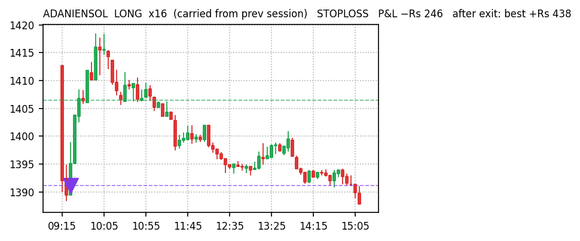
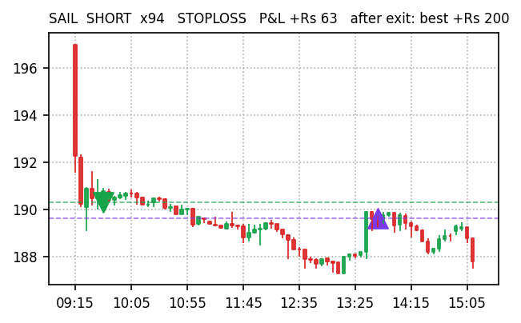
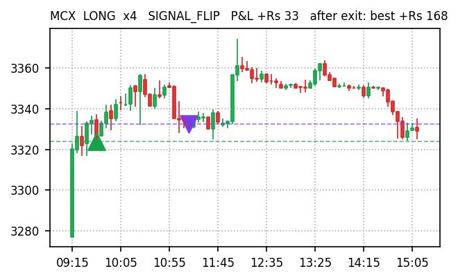
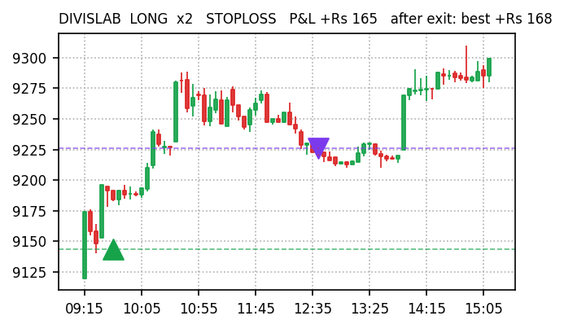
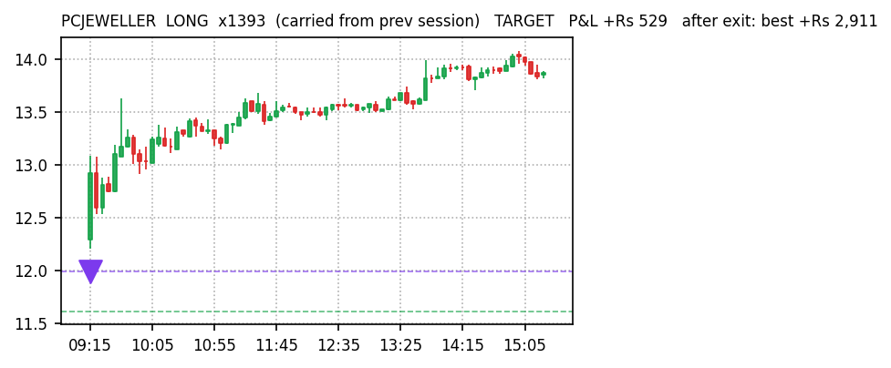
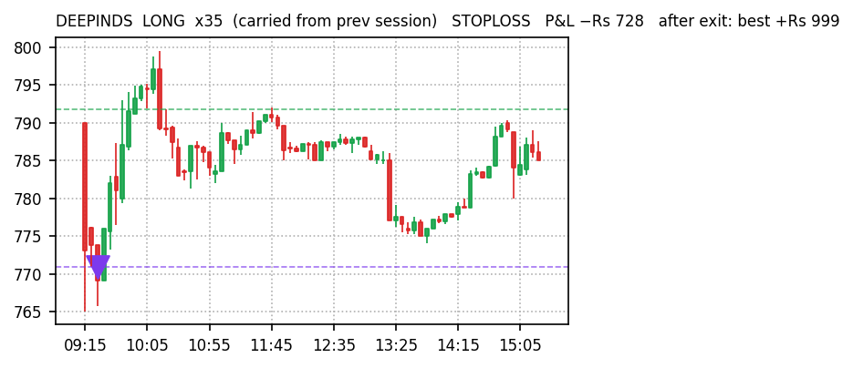
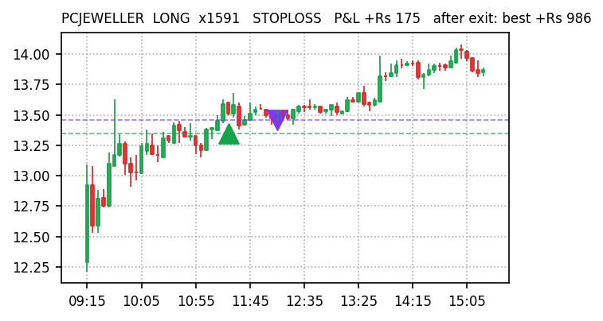
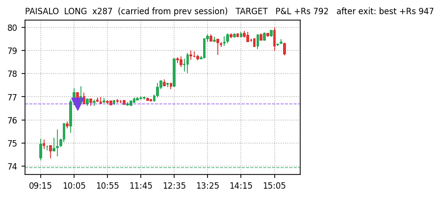
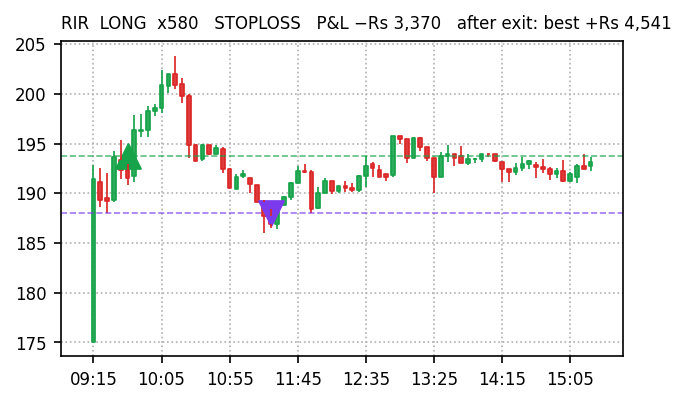
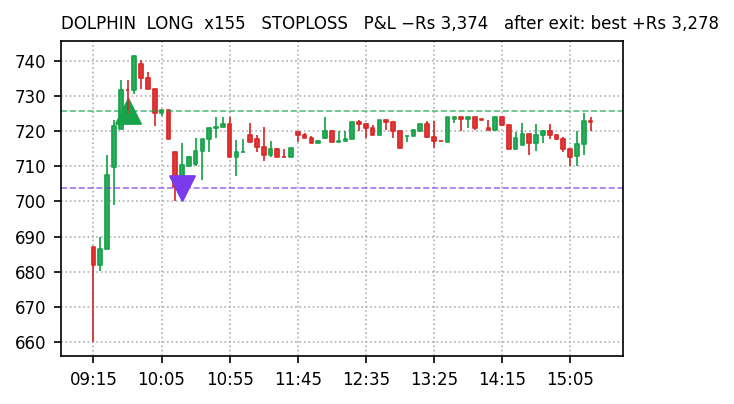
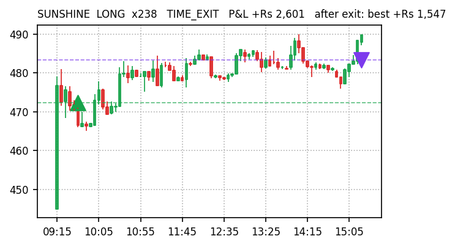
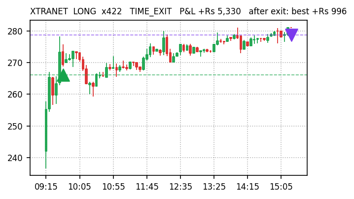
Sources: docs/paper-trades/*/2026-09-07.json · Kite historical 5-min · docs/reports/missed-trades-2026-09-07.md. Paper trading only, no real orders.